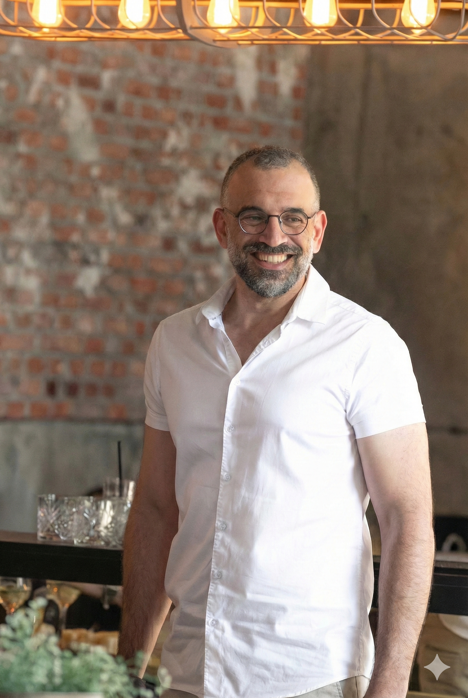
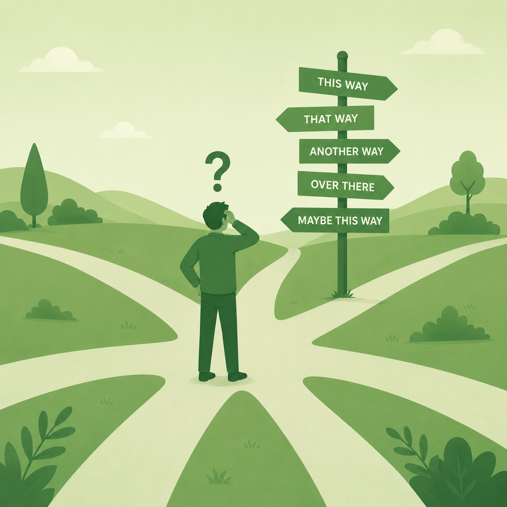

הדיוק הפנימי הוא המפתח לפריצה חיצונית מרחב שקט ומובנה למנהלים ולאנשים שרוצים לפרוץ תקרות זכוכית, לייצר בהירות בצמתי החלטה ולחבר בין הצלחה לסיפוק עמוק.
השילוב בין עולם העסקים לעולם הנפש
נעים להכיר, אני בן בליטי. אחרי קרוב לשני עשורים בתפקידים פיננסיים ותפעוליים בכירים (כולל 6 שנים כסמנכ"ל הכספים של מעבדות רפא והובלת מהלכים מול קרן פימי), גיליתי שהאתגרים הגדולים ביותר של מנהלים ואנשים הישגיים הם לא טכניים – הם תמיד יושבים על חסמים אישיים, תחושת תקיעות, או הצורך בדיוק ובהירות בצמתי דרכים תובעניים.
כמאמן אישי, אני מביא לקליניקה שילוב ייחודי: הבנה מוחלטת של הלחץ הארגוני והעסקי הכבד, יחד עם כלים אמוציונליים ופרקטיים מעולמות האימון, כדי לעזור לך לעצור, להתבונן פנימה, ולייצר את הצעד הבא שלך מתוך שקט נפשי ובטחון מלא.
מה קורה בתהליך האימון האישי?
זהו תהליך עומק מובנה המיועד לדיוק, בהירות והגשמה. אנו מייצרים מרחב סטרילי ובטוח המאפשר לך לבחון את דפוסי החשיבה שלך, לפרק פחדים או תקיעויות, ולבנות תוכנית עבודה מעשית שמובילה לתוצאות ממשיות – בלי לוותר על השקט הפנימי.

מתי זה הזמן הנכון להגיע לאימון?
צומת דרכים בקריירה
לפני מעבר תפקיד, שינוי כיוון מקצועי או החלטות עסקיות כבדות משקל שדורשות ניקוי רעשים פנימי.
תחושת תקיעות ושחיקה
כשאתה מרגיש שהגעת לתקרת זכוכית, או כשההצלחה החיצונית כבר לא מייצרת אצלך סיפוק ומשמעות פנימית.
חוסר איזון בחיים
כשחיי הקריירה התובעניים משתלטים לחלוטין, ואתה מחפש את הדרך לשלב הצלחה יחד עם שקט נפשי ונוכחות אישית.